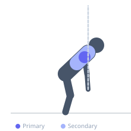

Exercise guide / Band Face Pull with External Rotation Lockout
Band Face Pull with External Rotation Lockout
The band face pull with external rotation lockout adds an end-range external rotation hold to a standard face pull, training the infraspinatus and teres minor through their full available range and at peak contraction. The resistance band provides accommodating resistance — lighter at the start (less stretched) and progressively heavier as the band stretches at end range — which matches the strength curve of the external rotators, applying peak load at peak contraction.
Primary muscles
infraspinatus
Secondary muscles
deltoid posterior
trapezius middle
Equipment
Resistance Band (Loop / Mini Band)


Starting position
- Anchor a resistance band at face height. Grip the band with both hands using an overhand grip, thumbs pointing outward. Step back until there is tension in the band with arms extended.
Setup
- Light to moderate band resistance. This is primarily a rotator cuff and upper back exercise.
Steps
- Step 1: Begin with arms extended, band under tension.
- Step 2: Pull the band toward the face, leading with the elbows flaring outward and upward to shoulder height.
- Step 3: As the hands reach the face, externally rotate the shoulders — thumbs point behind you, hands above elbows.
- Step 4: Hold the lockout position (full external rotation) for 2-3 seconds.
- Step 5: Reverse to the starting position under control.
Coaching cues
- Pull to your nose — not your chin or forehead
- Thumbs behind you at the lockout
- Hold it — 2-3 seconds of external rotation
Breathing
- Exhale pulling and rotating. Inhale returning.
Range of motion
- Full band extension to full external rotation lockout at face height.
Tempo
- 2-3-2-0
Common mistakes
- Skipping the external rotation — just pulling to the face without the ER misses the key benefit
- Elbows dropping below shoulder height during the pull
Safety
- Light band resistance — this is a posture and rotator cuff health exercise
- High volume is safe and appropriate for warm-up sets (20-30 reps)
Training
- rehabilitation: 15–30 reps
- rehabilitation: 2–4 sets
- Rest: {'rehabilitation': 45}